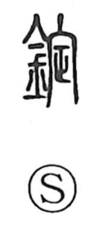

錠

Uncategorized
Kun: | On: jo
lock ・ tablet
Explanation
錠 is a phono-semantic character: the metal element signals a metal implement, while the phonetic 定 guides the Sino-Japanese reading jō. The Shuowen describes it in terms of 豆, the tall, footed ritual dish known in Japanese as a takatsuki, and also as a vessel with a built-in heater for serving warm food, reminiscent of a steaming basket. In Japanese usage the graph came to denote metal devices that fasten or secure—hence locks and restraints—and, by analogy to small molded pieces, tablets of medicine, as seen in words like 錠前, 錠剤, and 手錠.